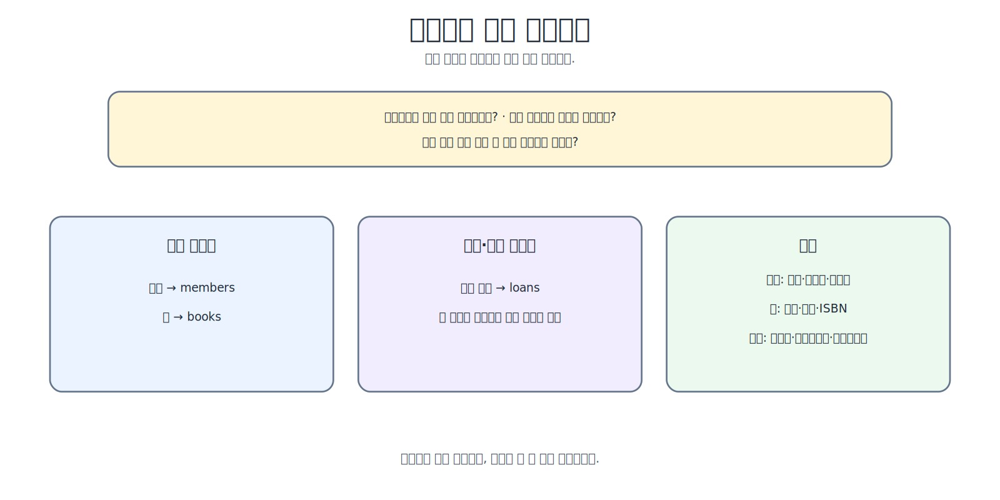
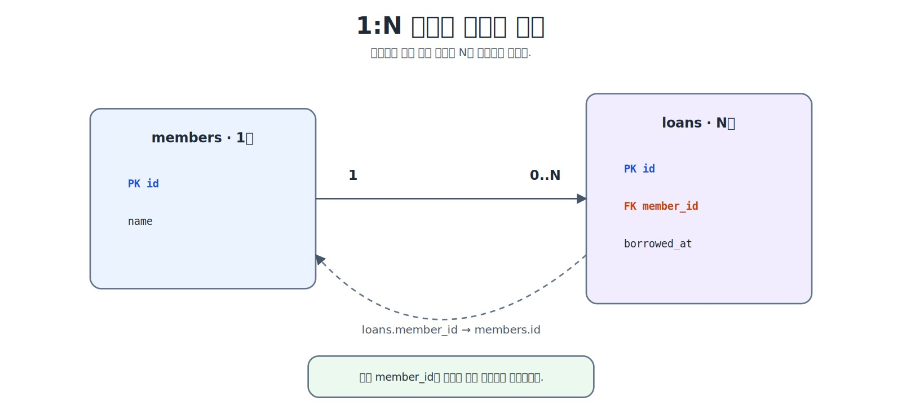
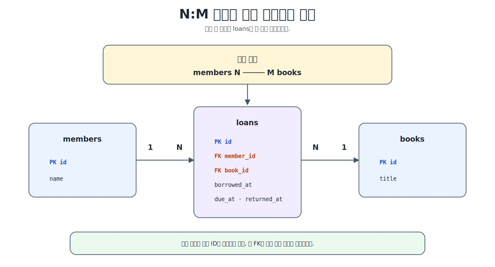
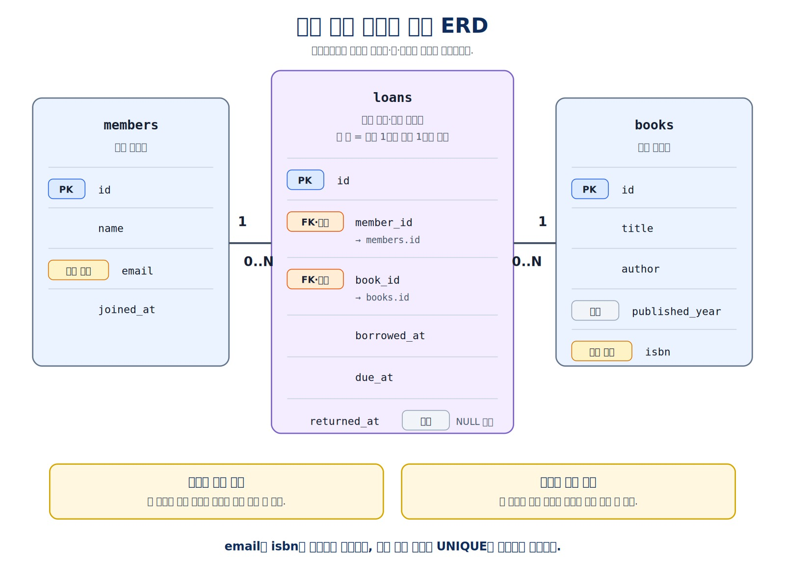
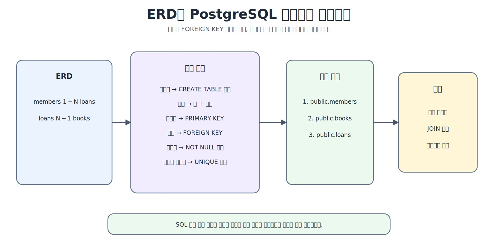
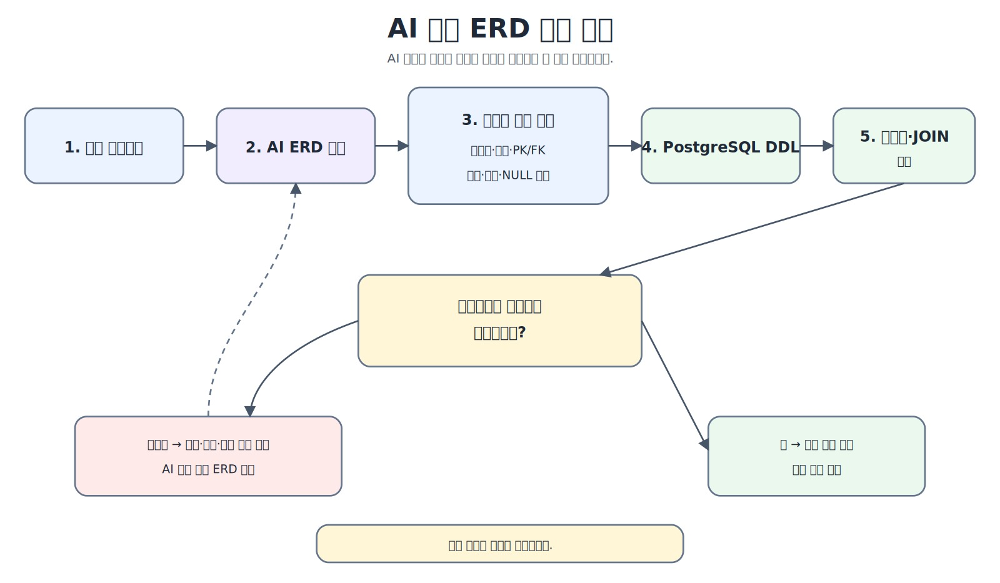

요구사항에서 데이터 모델과 ERD 만들기
실제 프로젝트에서는 테이블이 먼저 주어지지 않습니다. 이번 장에서는 업무 요구사항에서 관리 대상·속성·사건을 찾고, 각 테이블의 한 행 의미와 관계를 정의한 뒤 ERD와 PostgreSQL 구조로 연결합니다.
그리고 그 설계가 실제 업무 규칙을 빠짐없이 표현하는지 어떻게 검증할까?
이 장을 시작하기 전에
이 장은 데이터 모델링과 ERD를 처음 배우는 독자를 대상으로 합니다. Chapter 02에서 기본키·외래키와 관계의 기본 의미를 살펴보고, Chapter 04에서 테이블과 열을 직접 만들고 SQL을 실행했다면 별도의 설계 경험은 필요하지 않습니다.
Chapter 04에서는 이미 정해진 students 테이블을 만들고 SQL을 실행했습니다. 실제 프로젝트에서는 테이블이 먼저 주어지지 않습니다. 업무 요구사항을 읽고 무엇을 저장할지, 각 행이 무엇을 의미할지, 데이터가 어떻게 연결될지부터 결정해야 합니다.
이 장의 핵심 흐름은 다음과 같습니다.
요구사항 읽기
→ 업무 사실·규칙·미확정 질문 구분
→ 관리 대상·속성·사건 찾기
→ 테이블별 한 행의 의미 결정
→ 관계를 양방향 문장으로 작성
→ 카디널리티와 선택성 판단
→ ERD 초안 작성
→ 요구사항 추적표로 누락 확인
→ 작은 시나리오로 구조 검증
이 장을 마치면
다음 작업을 수행할 수 있습니다.
- 요구사항에서 관리 대상, 속성과 업무 규칙을 구분한다.
- 확정된 규칙과 미확정 정책을 분리한다.
- 각 테이블의 한 행이 무엇을 의미하는지 설명한다.
- 기본키와 업무상 고유값 후보를 구분한다.
- 관계를 양방향 문장으로 작성한다.
- 카디널리티와 선택성을 판단한다.
- N:M 관계를 연결 테이블로 풀고, 사건 속성을 가진 연결 엔터티를 설명한다.
- ERD와 작은 샘플 시나리오로 요구사항 반영 여부를 확인한다.
학습 표시
- 핵심 학습: 요구사항을 데이터 구조로 바꾸는 데 반드시 필요한 내용
- 선택 학습: 모델 수준, 1:1 관계와 PostgreSQL 구현을 확장하는 내용
- 심화 학습: 실물 복본(copy)·여러 저자·동시 대여·모델 변경을 다루는 내용
핵심 원칙
좋은 데이터 모델은 명사를 많이 찾아 만든 표가 아니라, 각 테이블·열·관계가 어느 요구사항에서 나왔는지 설명할 수 있는 구조입니다.
1. 요구사항에서 데이터 구조를 만드는 이유
다음과 같은 하나의 큰 표를 생각해 보겠습니다.
| member_name | member_email | book_title | author | borrowed_at | due_at |
|---|---|---|---|---|---|
| 김민지 | minji@example.com | 데이터베이스 입문 | 문길래 | 2026-04-01 | 2026-04-15 |
| 김민지 | minji@example.com | SQL 기초 | 홍길동 | 2026-04-02 | 2026-04-16 |
회원 정보와 도서 정보가 대여 기록마다 반복됩니다. 이메일이나 책 제목이 바뀌면 여러 행을 수정해야 하며, 한 행이 회원인지 도서인지 대여 사건인지도 분명하지 않습니다.
데이터 모델링은 현실의 업무를 관리 가능한 데이터 구조로 정리하는 과정입니다.
현실의 업무
→ 관리 대상과 사건
→ 속성
→ 관계
→ 업무 규칙
→ 테이블과 제약조건 후보
반복되는 정보는 테이블을 나눌 필요가 있다는 신호일 수 있습니다. 구체적인 정규화 기준은 Chapter 06에서 다룹니다. Chapter 05에서는 먼저 무엇을 왜 분리하고 연결하는지에 집중합니다.
2. 이 장에서 완성할 설계 산출물
ERD 그림 하나만 만들었다고 설계가 끝나는 것은 아닙니다. 이 장에서는 다음 결과물을 순서대로 완성합니다.
1. 요구사항 목록
2. 미확정 질문 목록
3. 테이블별 한 행의 의미
4. 엔터티·속성·사건 후보표
5. 양방향 관계 문장
6. ERD 초안
7. 요구사항 추적표
8. 작은 검증 시나리오
9. PostgreSQL DDL 초안
각 산출물은 앞 단계의 판단 근거를 보존합니다. 요구사항이 바뀌면 어느 테이블과 관계를 다시 검토해야 하는지도 추적할 수 있습니다.
선택 학습: 개념·논리·물리 모델
데이터 모델은 다음 수준으로 구분할 수 있습니다.
| 수준 | 핵심 질문 | 대표 결과 |
|---|---|---|
| 개념 모델 | 어떤 업무 대상과 사건이 있는가? | 회원, 도서, 대여 |
| 논리 모델 | 어떤 속성·키·관계가 필요한가? | members, books, loans 구조 |
| 물리 모델 | PostgreSQL에서 어떻게 구현하는가? | 열 타입, PK, FK, CREATE TABLE |
이 책에서는 초보자가 설계와 SQL을 연결할 수 있도록 논리 모델을 PostgreSQL 테이블 구조와 가깝게 표현한 실무형 ERD를 사용합니다. 엔터티와 테이블은 밀접하지만 완전히 같은 개념은 아닙니다.
3. 요구사항과 모델의 범위 정하기
이 장에서는 단순한 도서 대여 시스템을 설계합니다.
R-01. 도서관은 회원을 관리한다.
R-02. 회원은 이름, 이메일, 가입일을 가진다.
R-03. 도서는 제목과 저자를 관리하며, 출판연도와 ISBN 정보도 저장할 수 있다.
R-04. 회원은 여러 권의 책을 대여할 수 있다.
R-05. 책은 시간에 따라 여러 번 대여될 수 있다.
R-06. 대여 기록에는 대여일, 반납예정일, 실제반납일을 저장한다.
R-07. 아직 반납되지 않은 대여 기록은 실제반납일이 비어 있을 수 있다.
요구사항만큼 중요한 것이 모델의 범위입니다.
이 장의 단순화된 범위
books한 행은 이 장에서 대여 대상으로 취급하는 간소화된 도서 항목 한 건이다.- 실제 서가의 개별 복본(copy)은 별도 엔터티로 모델링하지 않으므로, 같은 ISBN을 가진 여러 실물 책을 서로 구분할 수 없다.
- 한 도서에 여러 저자가 연결되는 구조는 다루지 않는다.
- 샘플 데이터에서는 같은 도서의 동시 미반납 대여를 만들지 않는다.
- 동시 대여 차단을 데이터베이스에서 보장하는 방법은 Chapter 06에서 검토한다.
따라서 이 장의 books는 서지 정보와 실제 복본을 완전히 분리한 실무형 도서관 모델이 아닙니다. “도서 항목 하나를 대여 대상으로 취급한다”는 입문용 단순화이며, 복본별 바코드·소장 위치·분실 상태 같은 정보는 표현하지 않습니다.
4. 업무 사실·규칙·미확정 질문 구분하기
요구사항을 읽을 때 명사만 표시하지 않습니다. 다음 세 가지를 구분합니다.
| 구분 | 예 | 모델에서의 역할 |
|---|---|---|
| 업무 사실·관리 대상 | 회원과 도서를 관리한다 | 엔터티 후보 |
| 설명 값 | 이름, ISBN, 대여일 | 속성 후보 |
| 업무 규칙 | 회원은 여러 권을 대여할 수 있다 | 관계·제약조건 후보 |
요구사항을 표로 분해하면 다음과 같습니다.
| ID | 데이터 요소 | 관계·규칙 후보 |
|---|---|---|
| R-01 | 회원 | 독립적으로 관리 |
| R-02 | 이름, 이메일, 가입일 | 회원의 속성 |
| R-03 | 제목, 저자, 출판연도, ISBN | 도서의 속성 후보, 일부 값의 필수 여부는 추가 확인 |
| R-04 | 회원, 도서, 대여 | 회원과 대여의 반복 관계 |
| R-05 | 도서, 대여 | 시간에 따른 반복 사건 |
| R-06 | 대여일, 반납예정일, 실제반납일 | 대여 사건의 속성 |
| R-07 | 실제반납일 | NULL 허용 후보 |
확정된 규칙
현재 요구사항에서 분명하게 알 수 있는 내용입니다.
회원과 도서를 관리한다.
대여 기록은 회원과 도서를 연결한다.
대여일과 반납예정일을 저장한다.
실제반납일은 비어 있을 수 있다.
한 회원과 한 도서는 시간에 따라 여러 대여 기록을 가질 수 있다.
미확정 질문
요구사항에 답이 없으면 임의로 확정하지 않습니다.
회원 이메일은 반드시 고유한가?
이메일 대소문자를 같은 값으로 취급하는가?
ISBN은 반드시 고유한가?
ISBN이 없는 도서를 등록할 수 있는가?
동일 ISBN의 실제 복본을 어떻게 구분하는가?
한 도서에 여러 저자가 가능한가?
회원 한 명의 최대 대여 권수는 몇 권인가?
대여일보다 반납예정일이 앞설 수 있는가?
실제반납일이 대여일보다 앞설 수 있는가?
같은 도서를 동시에 두 명이 빌릴 수 있는가?
회원 삭제 후 대여 이력을 유지하는가?
미확정 질문은 설계 실패가 아닙니다. 오히려 확인되지 않은 정책을 UNIQUE, CHECK, 삭제 규칙으로 임의 구현하지 않도록 돕는 중요한 결과물입니다.
5. 엔터티·속성·사건 찾기
엔터티 후보를 판단할 때 다음 질문을 사용합니다.
독립적인 식별자가 필요한가?
여러 속성을 가지는가?
여러 건이 저장되는가?
다른 대상과 관계를 가지는가?
시간에 따라 반복되는 사건이나 이력인가?
| 후보 | 분류 | 판단 근거 |
|---|---|---|
| 회원 | 대상 엔터티 | 독립적으로 식별·관리하며 여러 속성을 가짐 |
| 도서 | 대상 엔터티 | 독립적으로 식별·관리하며 대여 이력을 가짐 |
| 대여 기록 | 사건 엔터티 | 반복 발생하며 날짜와 상태를 가짐 |
| 이메일 | 속성 | 회원을 설명하는 값 |
| ISBN | 속성 | 도서를 설명하는 값 |
| 반납예정일 | 속성 | 대여 사건을 설명하는 값 |
따라서 이 장의 핵심 테이블 후보는 다음과 같습니다.
members
books
loans

그림 5-1 엔터티·속성·사건 구분하기
loans는 회원과 도서를 연결하는 역할뿐 아니라 대여 시점과 반납 상태를 저장합니다. 따라서 단순 연결 테이블보다 사건·업무 테이블로 이해하는 것이 적절합니다.
6. 테이블별 한 행의 의미 정하기
열을 정하기 전에 각 테이블의 한 행이 무엇을 나타내는지 먼저 작성합니다.
| 테이블 | 한 행의 의미 |
|---|---|
members |
회원 한 명 |
books |
이 장에서 대여 대상으로 취급하는 간소화된 도서 항목 한 건 |
loans |
특정 회원이 특정 도서를 대여한 사건 한 건 |
한 행의 의미가 명확하면 속성의 위치를 판단하기 쉽습니다.
회원 이름과 이메일
→ members에 저장
도서 제목과 ISBN
→ books에 저장
대여일과 실제반납일
→ loans에 저장
다음과 같은 구조는 한 행의 의미를 흐리게 만듭니다.
members.book_id
→ 회원 한 명이 여러 도서를 대여하는 이력을 한 열로 표현할 수 없음
books.member_ids
→ 여러 회원 ID를 문자열이나 배열 한 값처럼 저장하면 대여 시점·반납 상태와 개별 관계를 독립적으로 검증하기 어려움
7. 식별자와 기본키 후보 정하기
각 행은 안정적으로 구분되어야 합니다.
| 테이블 | 기본키 후보 | 업무상 고유값 후보 | 현재 정책 상태 |
|---|---|---|---|
members |
id |
email |
고유성 미확정 |
books |
id |
isbn |
고유성·복본 정책 미확정 |
loans |
id |
별도 업무 규칙 필요 | 사건 한 건 식별 |
이 장에서는 모든 테이블에 숫자형 id를 내부 기본키로 사용합니다.
기본키
→ 데이터베이스 내부에서 행을 안정적으로 식별
업무상 고유값 후보
→ 정책이 확정되면 중복 금지를 검토할 값
이메일과 ISBN이 고유해 보이더라도 요구사항에서 보장하지 않으면 바로 UNIQUE를 적용하지 않습니다. 고유값 후보와 실제 고유성 제약조건은 구분해야 합니다.
선택 학습: 1:1 관계
일반 외래키만 추가하면 여러 자식 행이 같은 부모를 참조할 수 있으므로 그 자체로 1:1이 보장되지는 않습니다. 실제 1:1을 구현하려면 외래키에 UNIQUE를 적용하거나 부모의 기본키를 자식의 기본키이자 외래키로 사용하는 방법을 검토할 수 있습니다. 구체적인 제약조건 구현은 Chapter 06으로 넘깁니다.
8. 관계를 양방향 문장으로 표현하기
ERD를 그리기 전에 관계를 자연어로 작성합니다.
한 회원은 0개 이상의 대여 기록을 가질 수 있다.
하나의 대여 기록은 정확히 한 회원을 참조한다.
한 도서는 0개 이상의 대여 기록을 가질 수 있다.
하나의 대여 기록은 정확히 한 도서를 참조한다.
양방향 관계 문장은 다음 질문에 답하게 합니다.
- 어느 쪽이 1이고 어느 쪽이 N인가?
- 외래키는 어느 테이블에 있어야 하는가?
- 관계는 필수인가 선택인가?
- 요구사항과 반대 방향 문장이 모두 일치하는가?
관계 문장이 모호하면 ERD부터 그리지 말고 추가 질문을 작성해야 합니다.
9. 카디널리티와 선택성 판단하기
카디널리티는 한쪽 행이 다른 쪽 행과 최대 몇 개까지 연결되는지 나타냅니다. 선택성은 최소 하나가 반드시 필요한지를 나타냅니다.
| 표기 | 의미 |
|---|---|
1 |
정확히 하나 |
0..1 |
없거나 하나 |
0..N |
없거나 여러 개 |
1..N |
하나 이상 |
도서 대여 관계는 다음과 같습니다.
회원 → 대여 기록: 0..N
대여 기록 → 회원: 1
도서 → 대여 기록: 0..N
대여 기록 → 도서: 1
회원은 가입 직후 대여 기록이 없어도 되고, 신규 도서는 아직 대여되지 않았을 수 있습니다. 반면 대여 기록은 반드시 특정 회원과 특정 도서를 참조해야 합니다.

그림 5-2 1:N 관계와 외래키 위치
관계와 시간 규칙은 다릅니다.
books 1 : N loans는 한 도서가 시간 전체에 걸쳐 여러 대여 기록을 가질 수 있다는 뜻입니다. 같은 시점에 미반납 대여가 하나만 존재해야 한다는 규칙은 별도의 시간 기반 업무 제약입니다. ERD의 1:N 표기만으로 자동 보장되지 않습니다.
10. N:M 관계를 사건 테이블로 풀기
회원과 도서를 직접 연결하면 N:M 관계입니다.
한 회원은 여러 도서를 대여할 수 있다.
한 도서는 시간에 따라 여러 회원에게 대여될 수 있다.
관계형 데이터베이스에서는 N:M 관계를 보통 연결(교차) 테이블로 풀어 두 개의 1:N 관계로 표현합니다. 이 사례의 loans는 연결 정보뿐 아니라 대여일과 반납 상태 같은 사건 속성까지 가지므로 연결 엔터티이자 사건 테이블로 이해할 수 있습니다.
members 1 ─── N loans N ─── 1 books

그림 5-3 N:M 관계를 사건 테이블로 풀기
loans에는 다음과 같은 사건 정보가 포함됩니다.
member_id
book_id
borrowed_at
due_at
returned_at
따라서 loans 한 행은 단순히 회원과 도서가 연결되었다는 사실뿐 아니라 언제 대여했고 언제 반납 예정이며 실제로 반납했는지를 기록합니다.
11. ERD 표기와 텍스트 초안
이 책에서는 본문에서 읽기 쉬운 텍스트 표기를 기본으로 사용합니다.
1 정확히 하나
0..1 없거나 하나
0..N 없거나 여러 개
1..N 하나 이상
Crow’s Foot 표기에서는 일반적으로 다음 기호를 조합합니다.
| 하나
O 선택
< 여러 개
도구마다 표시 모양은 조금 다를 수 있으므로 기호를 암기하기보다 관계 문장과 함께 읽습니다.
먼저 텍스트 ERD를 작성합니다.
members
- id PK
- name
- email
- joined_at
books
- id PK
- title
- author
- published_year
- isbn
loans
- id PK
- member_id FK -> members.id
- book_id FK -> books.id
- borrowed_at
- due_at
- returned_at
관계
members 1 : 0..N loans
books 1 : 0..N loans
텍스트 구조를 먼저 작성하면 외래키 위치와 누락된 속성을 그림 도구에 의존하지 않고 검토할 수 있습니다.
12. 도서 대여 시스템 ERD
요구사항과 관계 문장을 바탕으로 한 핵심 ERD는 다음과 같습니다.

그림 5-4 도서 대여 시스템 핵심 ERD
ERD를 다시 자연어로 검증합니다.
members 한 행은 회원 한 명이다.
books 한 행은 이 장에서 대여 대상으로 취급하는 간소화된 도서 항목 한 건이다.
loans 한 행은 대여 사건 한 건이다.
loans.member_id는 반드시 members.id를 참조한다.
loans.book_id는 반드시 books.id를 참조한다.
returned_at은 미반납 상태를 표현하기 위해 비어 있을 수 있다.
ERD가 보기 좋더라도 이 문장을 설명할 수 없으면 설계가 충분히 검토된 것은 아닙니다.
13. 요구사항 추적표로 누락 확인하기
요구사항 추적표는 요구사항과 설계 결과를 연결합니다.
| ID | 요구사항 또는 질문 | 상태 | 반영 위치 | 검증 시나리오 |
|---|---|---|---|---|
| R-01 | 회원을 관리한다 | 확정 | members |
회원만 저장 가능 |
| R-02 | 이름·이메일·가입일 저장 | 확정 | members 열 |
회원 샘플 조회 |
| R-03 | 도서 정보 저장 | 확정 | books |
신규 도서 저장 가능 |
| R-04 | 회원의 반복 대여 | 확정 | loans.member_id |
회원 101의 여러 대여 |
| R-05 | 도서의 반복 대여 이력 | 확정 | loans.book_id |
도서 201의 시간순 이력 |
| R-06 | 대여 날짜 저장 | 확정 | loans 날짜 열 |
날짜 값 조회 |
| R-07 | 미반납 상태 허용 | 확정 | returned_at NULL 허용 |
미반납 3건 조회 |
| Q-01 | 이메일은 고유한가? | 미확정 | 제약조건 보류 | 정책 확인 필요 |
| Q-02 | ISBN은 항상 존재하며 고유한가? | 미확정 | isbn NULL 허용·UNIQUE 보류 |
정책 확인 필요 |
| A-01 | books 한 행을 간소화된 대여 대상 도서 항목으로 취급 |
가정 | 모델 범위 | 복본 미구분 명시 |
| O-01 | 여러 저자 모델 | 범위 제외 | 미반영 | 후속 확장 과제 |
상태는 다음 네 가지로 통일합니다.
확정
미확정
가정
범위 제외
추적표의 목적은 모든 질문에 억지로 답하는 것이 아닙니다. 무엇을 구현했고 무엇을 아직 결정하지 않았는지 드러내는 것입니다.
14. ERD를 PostgreSQL 구조로 변환하기
ERD 요소는 다음과 같이 PostgreSQL 구조 후보로 연결됩니다.
| ERD 요소 | PostgreSQL 구조 후보 |
|---|---|
| 엔터티 | 테이블 |
| 속성 | 열 |
| 식별자 | 기본키 |
| 1:N 관계 | N쪽 테이블의 외래키 |
| 필수 속성 | NOT NULL 후보 |
| 확정된 업무상 고유값 | UNIQUE 후보 |
| 선택 속성 또는 필수 여부 미확정 속성 | NULL 허용 후보 |

그림 5-5 ERD를 PostgreSQL 구조로 변환하기
현재 연결을 확인합니다.
SELECT current_database();
SELECT current_user;
SELECT current_schema();
SHOW search_path;
현재 스키마는 환경에 따라 public이 아닐 수 있습니다. 이 장의 실습 파일은 public.members처럼 스키마를 명시합니다.
CREATE TABLE public.members (
id INTEGER GENERATED BY DEFAULT AS IDENTITY PRIMARY KEY,
name VARCHAR(50) NOT NULL,
email VARCHAR(100) NOT NULL,
joined_at DATE NOT NULL
);
CREATE TABLE public.books (
id INTEGER GENERATED BY DEFAULT AS IDENTITY PRIMARY KEY,
title VARCHAR(200) NOT NULL,
author VARCHAR(100) NOT NULL,
published_year INTEGER,
isbn VARCHAR(20)
);
CREATE TABLE public.loans (
id INTEGER GENERATED BY DEFAULT AS IDENTITY PRIMARY KEY,
member_id INTEGER NOT NULL REFERENCES public.members(id),
book_id INTEGER NOT NULL REFERENCES public.books(id),
borrowed_at DATE NOT NULL,
due_at DATE NOT NULL,
returned_at DATE
);
이메일과 ISBN에는 아직 UNIQUE를 적용하지 않았습니다. 중복을 허용하기로 확정한 것이 아니라 고유성 정책이 미확정이므로 적용을 보류한 것입니다. 또한 ISBN이 없는 도서를 허용할지도 미확정이므로 Chapter 05의 isbn은 NULL을 허용합니다. Chapter 06에서 정책을 확정한 뒤 기존 데이터와 함께 NOT NULL·UNIQUE 적용 여부를 검토합니다.
부모 테이블을 먼저 만들고 이를 참조하는 자식 테이블을 나중에 만듭니다.
public.members
→ public.books
→ public.loans
권장 실행 파일은 다음과 같습니다.
심화 학습: 고정 ID와 IDENTITY
샘플 관계를 쉽게 확인하기 위해 실습 파일은 101, 201, 1001처럼 고정 ID를 사용합니다. 명시적 ID 입력 후 자동 생성값의 다음 위치를 조정하는 작업은 02_library_seed.sql이 처리합니다. 이 내부 동작을 이해하지 않아도 핵심 모델링 실습을 진행할 수 있습니다.
15. 작은 샘플 시나리오로 구조 검증하기
모델은 정상적인 업무 시나리오를 표현할 수 있어야 합니다.
| 시나리오 | 구조가 표현해야 할 상태 |
|---|---|
| 신규 회원 | 대여 기록 없이 회원만 저장 가능 |
| 신규 도서 | 대여 이력 없이 도서만 저장 가능 |
| 반복 대여 | 같은 회원이 여러 대여 기록 보유 |
| 도서 이력 | 같은 도서가 시간에 따라 여러 번 대여됨 |
| 미반납 상태 | returned_at이 NULL |
| 관계 연결 | 모든 대여가 특정 회원과 도서를 참조 |
샘플 기준은 다음과 같습니다.
members: 3행
books: 3행
loans: 4행
미반납 대여: 3행
고아 대여 기록: 0행
도서 201은 첫 대여가 2026년 4월 2일 반납된 뒤 2026년 4월 3일 다시 대여됩니다. 이 샘플은 시간에 따른 반복 이력을 표현하지만 동시 미반납 상태는 만들지 않습니다. 다만 books가 실물 복본을 구분하지 않는 간소화 모델이므로, 이 사실만으로 실제 도서관의 복본별 대여 가능성을 완전하게 표현했다고 볼 수는 없습니다.
관계가 실제 조회로 이어지는지 최소 JOIN으로 확인할 수 있습니다.
SELECT
loans.id,
members.name AS member_name,
books.title AS book_title,
loans.returned_at
FROM public.loans AS loans
JOIN public.members AS members
ON loans.member_id = members.id
JOIN public.books AS books
ON loans.book_id = books.id
ORDER BY loans.id;
이 SQL은 ERD의 연결이 실제 데이터 조회로 이어지는지만 확인합니다. JOIN 문법과 다양한 결합 방식은 Chapter 08에서 학습합니다.
외래키 오류, 날짜 선후 관계, 이메일·ISBN 고유성, 동시 활성 대여 차단은 Chapter 06에서 실패 사례와 제약조건으로 검토합니다.
선택 학습: 요구사항이 바뀌면
요구사항은 바뀔 수 있습니다.
한 도서에 여러 저자가 필요해짐
동일 ISBN의 실제 복본을 구분해야 함
회원 이메일의 고유성이 확정됨
대여 상태를 별도 값으로 관리해야 함
이때 테이블을 무조건 삭제하고 다시 만드는 것이 아니라 다음 흐름을 따릅니다.
변경 요구사항 기록
→ 기존 모델 영향 분석
→ ERD 수정
→ ALTER TABLE·데이터 이전 계획
→ 검증
ALTER TABLE과 제약조건 변경은 Chapter 06에서 이어서 다룹니다.
16. AI가 만든 모델 검토하기
AI는 엔터티와 관계 후보를 빠르게 정리할 수 있지만, 요구사항에 없는 정책을 자연스럽게 추가하거나 모델의 범위를 바꿀 수 있습니다.
AI에게 다음 항목을 명시해 요청합니다.
요구사항에서 엔터티·속성·사건 후보를 구분해 주세요.
각 테이블의 한 행 의미를 작성해 주세요.
관계를 양방향 문장으로 설명해 주세요.
각 테이블과 열의 요구사항 ID를 표시해 주세요.
확정 규칙, 미확정 질문, 가정과 범위 제외를 구분해 주세요.
요구사항에 없는 UNIQUE·CHECK·삭제 정책을 임의로 확정하지 마세요.
작은 검증 시나리오를 함께 제안해 주세요.

그림 5-6 AI 생성 ERD 검토 흐름
AI 결과는 다음 여섯 질문으로 검토합니다.
1. 각 테이블과 열의 요구사항 근거가 있는가?
2. 각 테이블의 한 행 의미가 명확한가?
3. 미확정 정책을 임의로 확정하지 않았는가?
4. 관계를 양방향으로 읽었을 때 카디널리티가 맞는가?
5. N:M 관계와 반복 사건을 적절히 분리했는가?
6. 작은 샘플 시나리오를 구조가 표현할 수 있는가?
예를 들어 AI가 members에 book_id 하나만 추가했다면 한 회원의 반복 대여와 시간 이력을 표현할 수 없습니다. loans 같은 사건 테이블이 필요합니다.
17. 자주 하는 실수·스스로 확인하기·핵심 정리
자주 하는 실수
- 중요한 명사를 모두 테이블로 만든다.
- 테이블의 한 행 의미를 정하지 않는다.
- 동사와 수량 표현을 무시한다.
- 요구사항에 없는 정책을 임의로 확정한다.
- 관계를 한 방향으로만 읽는다.
- N:M 관계를 문자열이나 배열 한 열로 저장한다.
- ERD의 1:N이 동시성 업무 규칙까지 보장한다고 생각한다.
- 그림이 그럴듯하면 요구사항 검증이 끝났다고 생각한다.
- 샘플 데이터만 보고 이메일·ISBN의 고유성을 확정한다.
- 요구사항 변경 시 기존 데이터 영향을 검토하지 않는다.
스스로 확인하기
members,books,loans의 한 행 의미를 각각 설명해 보세요.- 이메일과 ISBN에 바로
UNIQUE를 적용하지 않은 이유는 무엇인가요? - 회원과 도서의 N:M 관계를
loans가 어떻게 두 개의 1:N으로 바꾸나요? - 회원에서 대여 기록으로 향하는 관계가
0..N인 이유는 무엇인가요? - 대여 기록에서 회원으로 향하는 관계가
1인 이유는 무엇인가요? - ERD의 1:N 관계와 동시 미반납 대여 금지 규칙은 왜 다른가요?
- 요구사항 추적표에서
미확정과가정은 어떻게 다른가요? - AI가 이메일 고유성과 회원 삭제 정책을 임의로 추가했다면 어떻게 수정해야 하나요?
Chapter 05 독자 워크북에서 요구사항 분석과 ERD 판단 근거를 직접 기록할 수 있습니다.
핵심 정리
| 질문 | 설계 결과 |
|---|---|
| 무엇을 관리하는가? | 엔터티·사건 후보 |
| 한 행은 무엇인가? | 테이블의 의미 |
| 무엇을 저장하는가? | 속성·열 후보 |
| 어떻게 연결되는가? | 관계 문장·외래키 후보 |
| 몇 개까지 연결되는가? | 카디널리티 |
| 반드시 연결되어야 하는가? | 선택성·NULL 여부 후보 |
| 정책이 확정되었는가? | 제약조건 적용 또는 보류 |
| 요구사항이 반영되었는가? | 추적표·샘플 시나리오 |
이 장에서 가장 중요한 문장은 다음과 같습니다.
각 테이블의 한 행은 무엇을 의미하며,
그 테이블·열·관계가 어느 요구사항에서 나왔는지 설명할 수 있어야 한다.
다음 장에서는
Chapter 06에서는 이 장의 모델을 더 안전한 데이터베이스 구조로 발전시킵니다.
반복 데이터와 함수적 종속 확인
→ 정규화
→ UNIQUE·CHECK·외래키 제약조건
→ ALTER TABLE로 구조 보완
→ 잘못된 데이터 입력 실패 확인
→ 참조 무결성과 동시 활성 대여 검토